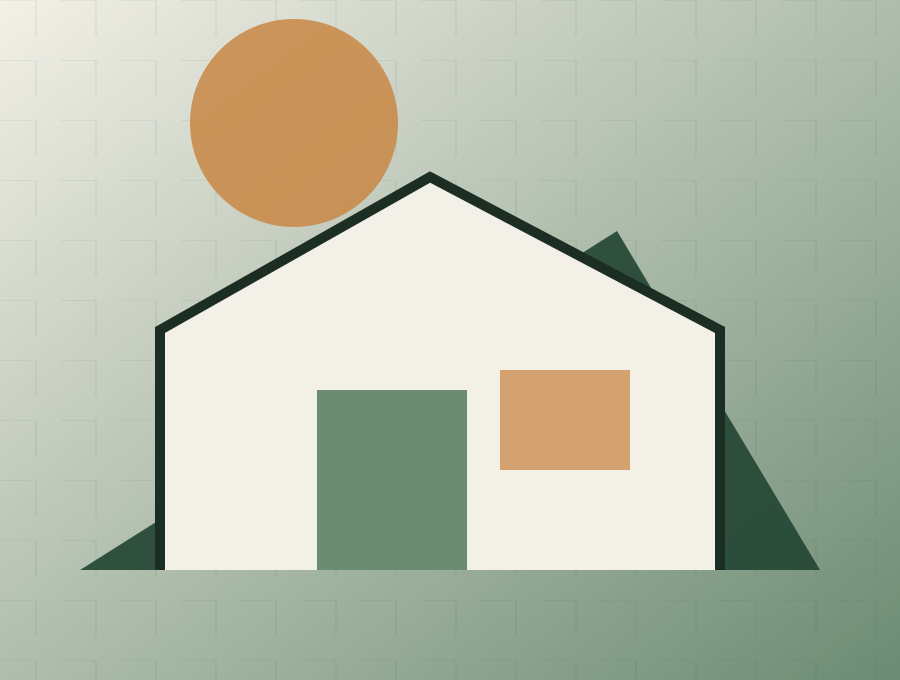

Oldalösszefoglaló
Ez az oldal a TimberHaus legerősebb eleme. Szolgáltatások:
Nyitott, összehasonlítható és épületfizikailag transzparens faépítés. A döntési központ célja, hogy a látogató egyértelmű szempontokkal jusson el a következő megalapozott döntésig.
Fából mindent lehet.
Drive-forráshoz igazított tesztoldal · publikálás nélkül
Nyitott, összehasonlítható és épületfizikailag transzparens faépítés.
Ez az oldal a TimberHaus legerősebb eleme. Szolgáltatások:
A felhasználó megadja a telek paramétereit, az AI kiértékeli a HÉSZ, talajmechanika és beépíthetőség alapján.
Alapterület, tetőforma, homlokzat, nyílászárók, energetikai rendszer, smart megoldások, belső stílus választása. Azonnali ár‑ és kivitelezési idő becslés.
Kalkulátor a várható építési költségre (több száz adat alapján), figyelembe véve a teleket, házméretet, technológiát.
Hitel, CSOK, önerő, havi törlesztő.
Interaktív idővonal a tervezéstől a költözésig.
Hőkamerás példák, várható rezsi költségek.
CTA: "Kezdjük el a tervezést".
A preview nem küld adatot és nem tesz ajánlatot. Ár, határidő, garancia vagy szerződéses vállalás csak jóváhagyott evidence- és ajánlati rekord alapján jelenhet meg élesben.